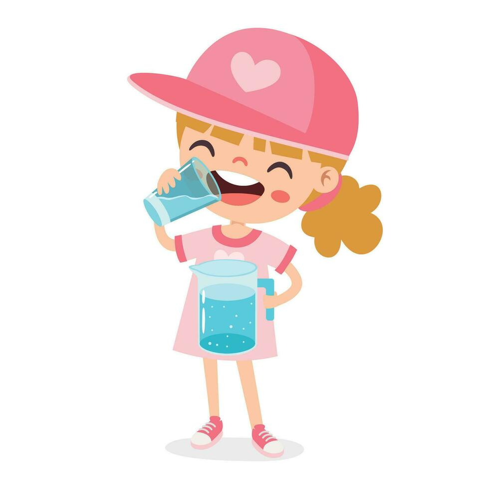
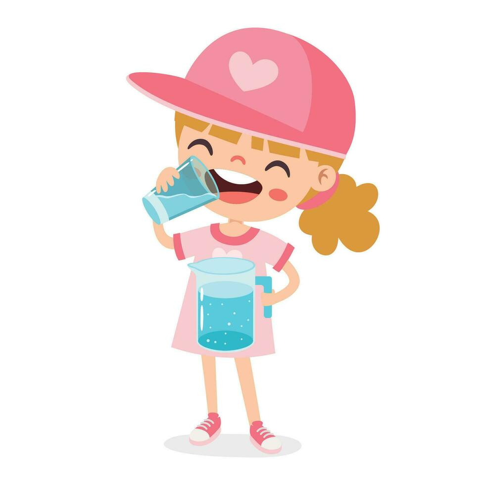
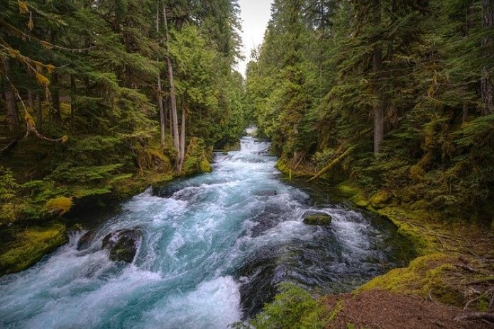
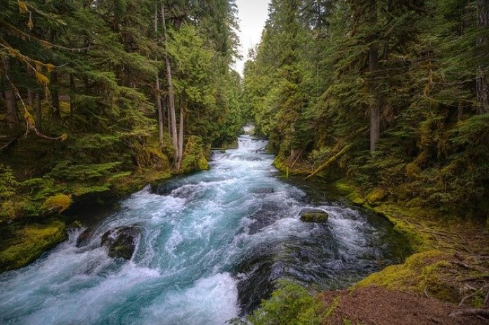

🌍 ¿Por qué debemos cuidar el agua?
El agua es un recurso vital para la vida. Sin ella, no existirían los ecosistemas ni los cultivos que nos alimentan. Aunque el planeta parece lleno de agua, solo el 2.5% es dulce y apta para consumo humano. A medida que crece la población, la demanda de agua aumenta y la disponibilidad disminuye.
 

- Más de 2 mil millones de personas viven sin acceso a agua potable segura.
- El 70% del agua dulce se usa en la agricultura.
- El desperdicio y la contaminación agravan la crisis hídrica global.
🏡 Consejos para ahorrar agua
🌱 El agua y el medio ambiente
Los ríos, lagos y humedales son el hogar de miles de especies. Cuidar el agua también significa proteger la vida silvestre. Al reducir el uso de productos contaminantes y evitar tirar basura, ayudamos a conservar los ecosistemas.
 

📊 Datos sorprendentes
- El cuerpo humano está compuesto en un 70% por agua.
- Una ducha de 10 minutos puede usar más de 100 litros de agua.
- Producir 1 kilo de carne requiere 15,000 litros de agua.
- Una fuga de grifo puede desperdiciar más de 30 litros al día.
💭 ¿Qué puedes hacer tú?
Todos tenemos un papel importante. Participa en actividades ecológicas, enseña a los demás, y adopta hábitos sostenibles en casa, la escuela y el trabajo.
- Evita el uso de plásticos de un solo uso.
- Participa en limpiezas de ríos y playas.
- Promueve campañas de educación ambiental.
- Informa a otros sobre la importancia del agua.